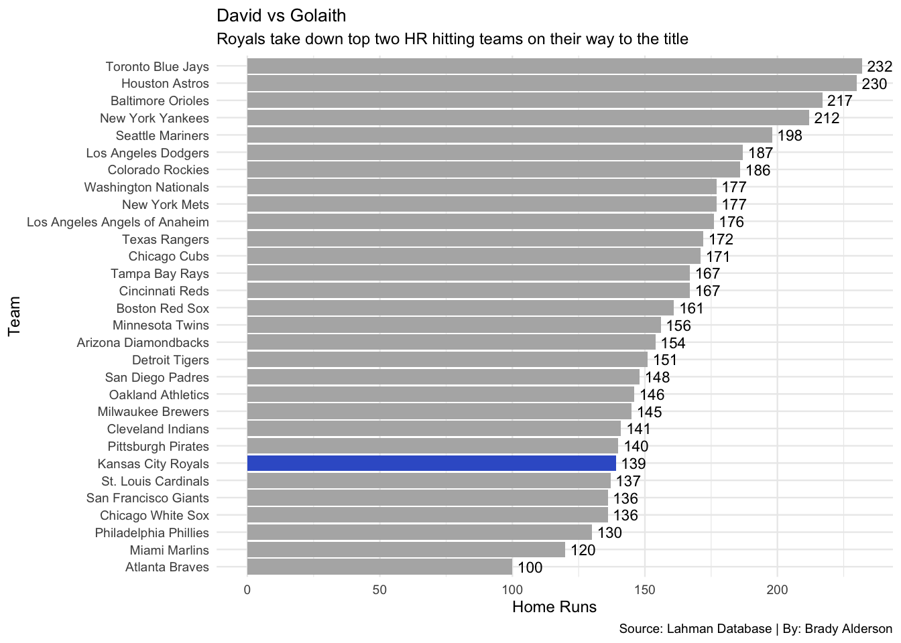
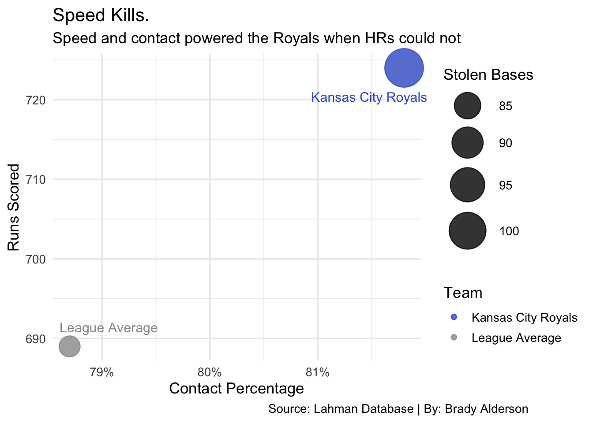

A Win For The Little Guy, How The 2015 Royals Won The World Series
World Series
MLB
Royals
Author
Brady Alderson
Published
November 19, 2025
“Small ball” has been phasing out of Major League Baseball over the last decade as the long ball has completely taken over. Teams and hitters now value launch angle and exit velocity far more than on-base percentage and stolen bases. The clubs that have fully embraced this heavy-hitting style of baseball have been extremely successful over the last 10 years. But one team that valued the little things was able to overcome the giants and take home the World Series.
The Kansas City Royals were one of the worst teams in baseball at hitting home runs, yet they won the World Series.
There have been 10 World Series champions since the Royals’ title in 2015. Not one has finished lower than 15th in home runs, with many of the champions ranking within the top three in homers.
ggplot(mlb2015, aes(x =reorder(name, HR), y = HR, fill = name =="Kansas City Royals")) +geom_col() +geom_text(aes(label = HR), hjust =-0.2, size =3) +coord_flip() +scale_fill_manual(values =c("gray70", "royalblue3"), guide ="none") +labs(title ="David vs Golaith",subtitle ="Royals take down top two HR hitting teams on their way to the title",caption ="Source: Lahman Database | By: Brady Alderson",x ="Team",y ="Home Runs" ) +theme_minimal(base_size =9) +theme(plot.title =element_text(size =10) )

Code
#1 include: falseggsave("image.png")
Saving 7 x 5 in image
The Royals ranked 24th out of 30 teams in home runs in 2015, a recipe for disaster in most cases. But somehow, Kansas City became the only World Series champion in the last 10+ seasons to finish in the bottom half of the league in home runs.
You’ll notice Houston and Toronto at the top of the list. Kansas City beat both of those teams en route to its second World Series championship. We know you can’t win baseball games if you can’t score runs, so if the Royals weren’t scoring via the long ball, how did they produce enough offense to take down the giants?
Code
library(ggplot2)# Approximate 2015 data (FanGraphs + Baseball Reference)data <-data.frame(Team =c("Kansas City Royals", "League Average"),ContactPct =c(81.8, 78.7), # Royals were near the top in contact rateRunDiff =c(83, 0), # League average ~0Runs =c(724, 689), # Royals vs league average runsSB =c(104, 83) # Royals stole 104 bases vs league avg ~83)
Code
library(scales) # for label_percent
Code
ggplot(data, aes(x = ContactPct, y = Runs, size = SB, color = Team)) +geom_point(alpha =0.8) +scale_size(range =c(8, 15), name ="Stolen Bases") +scale_color_manual(values =c("Kansas City Royals"="royalblue3", "League Average"="gray60")) +labs(title ="Speed Kills.",subtitle ="Speed and contact powered the Royals when HRs could not",caption ="Source: Lahman Database | By: Brady Alderson",x ="Contact Percentage",y ="Runs Scored" ) +geom_text(aes(label = Team,vjust =ifelse(Team =="Kansas City Royals", 3.5, -1.5), # Royals ↓, League Avg ↑hjust =ifelse(Team =="Kansas City Royals", 0.8, .1) ),size =4,show.legend =FALSE) +theme_minimal(base_size =13) +theme(legend.position ="right") +theme(plot.caption =element_text(hjust =2)) +scale_x_continuous(labels =label_percent(scale =1)) +# ✅ show x-axis as percentagescoord_cartesian(clip ="off") # ✅ prevent labels/bubbles from being cut off

The Royals used “small ball” tactics to pull off their incredible championship run. Kansas City was well above league average in runs scored because of its ability to get on base, get into scoring position, and put the ball in play. The Royals led the league in stolen bases, turning their singles into doubles. This allowed them to apply pressure without relying on the home run. Their ability to take the extra base proved valuable because of their elite contact rate. Kansas City put the ball in play and used its speed to create chaos on the base paths.
Offense isn’t the only aspect that makes a baseball team good. Pitching and the ability to limit your opponent’s scoring are just as crucial. The Royals’ 2015 bullpen has become widely regarded as one of the best bullpens in the history of the sport—maybe of all time. But how good were they, really?
Code
library(ggplot2)library(tidyr)library(dplyr)# 2015 data (approximate from Baseball Reference / FanGraphs)bullpen <-data.frame(Pitcher =c("Wade Davis", "Kelvin Herrera", "Greg Holland"),ERA =c(0.94, 2.71, 3.83),FIP =c(2.29, 3.36, 3.27),League_ERA =3.71,League_FIP =3.73)# Convert to long format for dumbbell plottingbullpen_long <- bullpen %>%pivot_longer(cols =c(ERA, FIP),names_to ="Metric",values_to ="Value")library(fmsb)# Royals' "Three-Headed Monster" vs League Average (2015)bullpen_stats <-data.frame(row.names =c("Max", "Min", "Royals Bullpen", "League Average"),ERA =c(5, 0, 1.95, 3.71),FIP =c(5, 0, 2.50, 3.70),WHIP =c(1.8, 0.6, 0.95, 1.28),K9 =c(12, 6, 9.6, 8.2),WAR =c(3, 0, 2.7, 0.9),Leverage =c(2.0, 0.5, 1.7, 1.0))
Kansas City took down the two teams that hit the most home runs in 2015, but how did they keep those top offenses from teeing off against them?
The Royals’ bullpen was led by the “three-headed monster,” or “HGH,” as many fans in Kansas City called them. Wade Davis, Kelvin Herrera, and Greg Holland typically handled the seventh, eighth, and ninth innings for the Royals in 2015. Wade Davis posted an ERA below 1.00, giving him one of the best individual seasons in baseball that year, and the combined ERA of the trio finished below 2.00. The Royals’ greatest advantage was their ability to keep opponents off the board late in games, allowing them to consistently win in the clutch.
In the areas where “lower is better” (ERA, WHIP, FIP), the Royals ranked far below the rest of baseball. And in the categories where higher numbers signal success (K/9, WAR, leverage index), Kansas City ranked well above its opponents.
WAR—wins above replacement—and leverage index are where the true value of the Royals’ bullpen shows. Compared to the rest of MLB, Kansas City’s relievers consistently excelled in high-leverage moments. Rather than padding their stats in blowouts, the Royals’ bullpen did its best work late in tight games.
The 2015 Royals are one of the most unique champions in World Series history. Finishing in the bottom six in home runs while still generating strong offense is nearly unheard of in the modern era. Kansas City also benefited from a world-class bullpen and top-tier defense. The Royals bought into all the small aspects of baseball, taking a different route to the top.